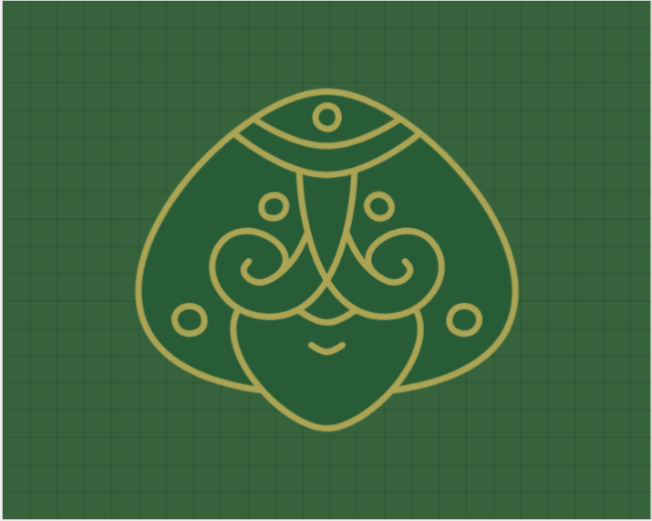
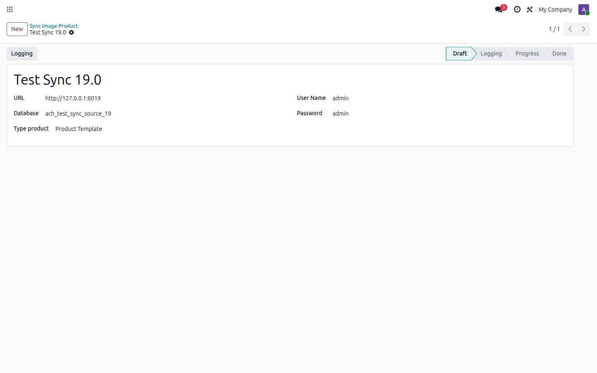
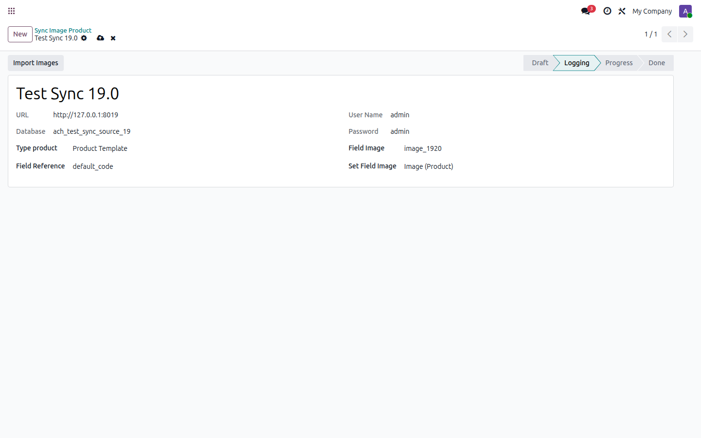
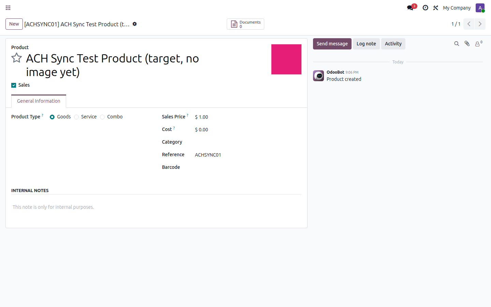

| Cross-database import | No custom API needed | Match by any reference field | Odoo 19 |
Connect to a remote Odoo database over XML-RPC, pick which field identifies a matching product on both sides, and pull the image straight into your local products.
🔗 Direct XML-RPC connectionLog in to any remote Odoo (any recent version) with its URL, database name, and user credentials — no extra module needed on the remote side. |
🔍 Pick your own matching keyUse the internal reference, the product name, or any field you like to match a remote record to its local counterpart. |
📷 Works with variants or templatesChoose whether you are pulling images for Product Variants or Product Templates. |
✅ One click importOnce connected, a single "Import Images" click reads every matching remote record and writes the image onto the local field you choose. |
| 1 | Create a Sync Image Product record Under Settings > Technical > Automation > Sync Image Product, enter the remote Odoo's URL, database, user and password, and choose Product Variant or Product Template. |
| 2 | Click "Logging" The module authenticates against the remote database and reads its available fields for the chosen product model. |
| 3 | Choose the matching fields Pick the remote reference field (the key shared by both databases), the remote image field, and the local field where the image should be written. |
| 4 | Click "Import Images" Every remote record with a matching local counterpart gets its image copied over. |
|
 Connection details for the remote Odoo database |
 Reference field, remote image field and local target field selected after logging in |
|
 Result: the product's image, pulled from the other database, now shows on the local record |
| ✓ | No export/import files. Everything happens live over XML-RPC, straight from one database to the other. |
| ✓ | Version-independent. It doesn't matter which Odoo version the images are coming from. |
| ✓ | You choose the fields. Matching key and target field are picked at run time, not hard-coded. |
| Odoo version | 19.0 (Community or Enterprise) |
| Dependencies | Base only |
| Remote side | Any Odoo database reachable over XML-RPC (no module needed on that side) |
Does the remote Odoo need this module installed too?
No. The connection is a plain XML-RPC login against the remote database's standard API.
Can I match products by their name instead of the internal reference?
Yes, the reference field is any field you pick after logging in — internal reference, name, barcode, or any custom field.
ACH Alchemical Code
Questions before you buy, or need support after installing?
Contact us: mikealquimia@gmail.com